“Scelta migliore non potevamo farla! Festa molto riuscita e la musica ha contribuito notevolmente. Lorenzo è stato sempre disponibile fin dall'inizio, supportandoci con sopralluogo della location, fornendo l'impianto stereo e luci e coinvolgendoci nel creare la playlist che più ci piacesse.”
Michele & Cristina · Matrimonio.com · 21/01/2025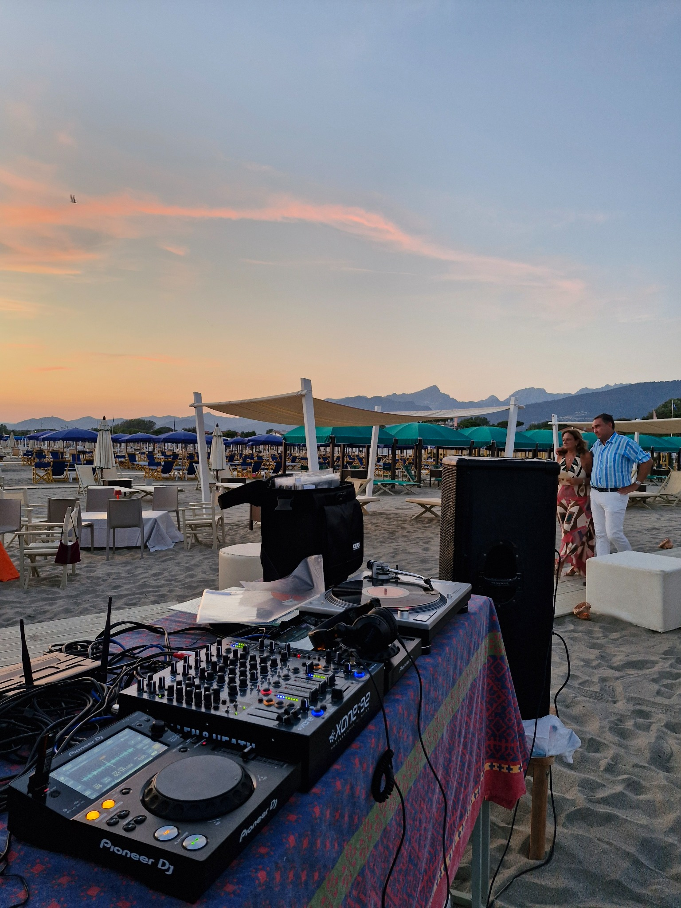
DJ · MUSIC SELECTOR
LORENDINI
Matrimoni, eventi
e feste.
Musica, atmosfera e buon suono.
Senza formule preconfezionate.
Good music.
Good vibes.
Good vibes.
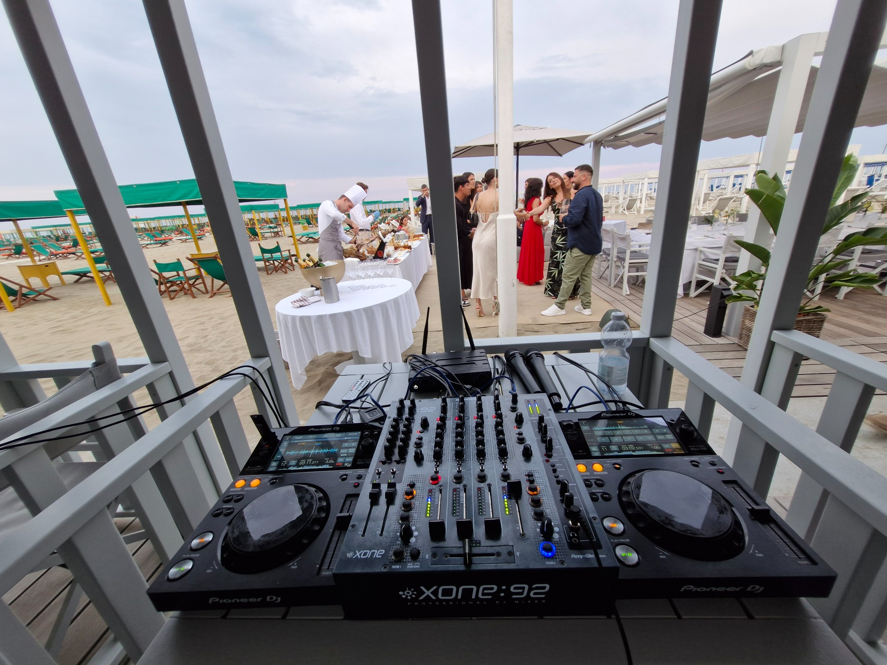
WEDDING
La musica
del vostro giorno
Dall'aperitivo al dopo cena, una selezione musicale costruita insieme a voi.
Scopri il servizio →EVENTS
Feste ed eventi
senza formule
Feste private, eventi aziendali, locali e serate speciali.
Scopri gli eventi →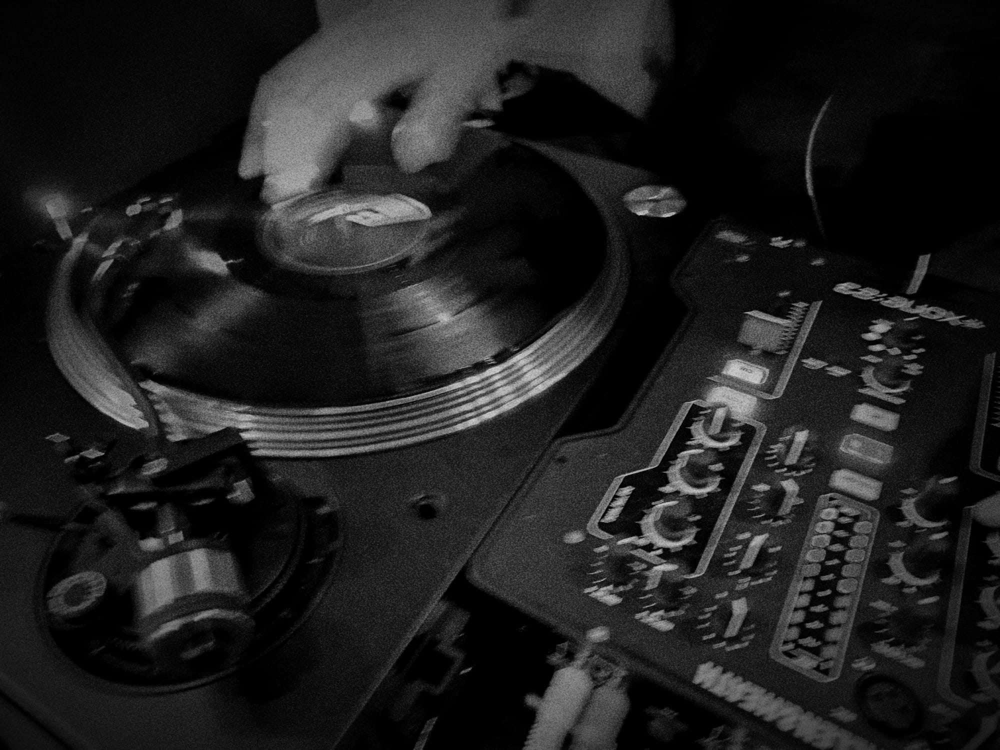
VINYL
More
than music
Selezioni in vinile per aperitivi, eventi e occasioni speciali.
Scopri il mondo vinyl →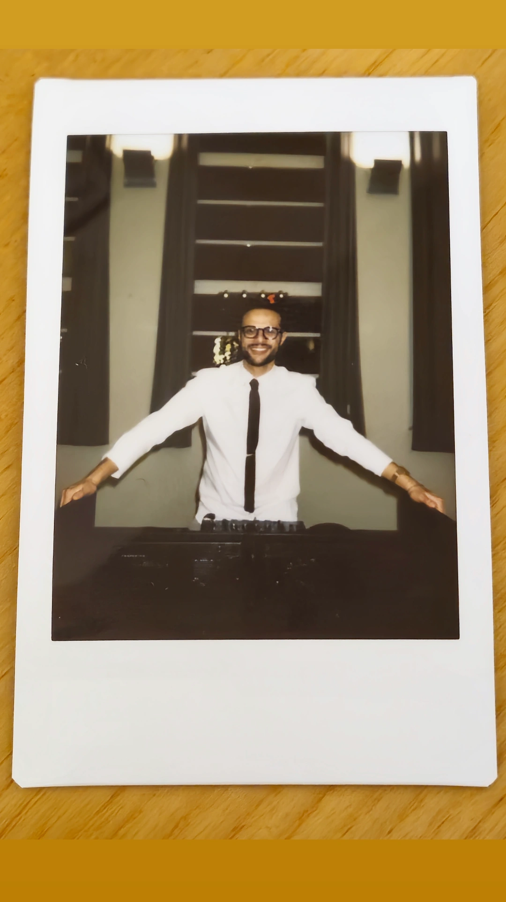
ABOUT
Chi c'è dietro
la console
Sono Lorenzo, in arte Lorendini. Sono DJ e music selector e la musica mi accompagna da sempre: dai locali ai matrimoni, dalle feste private agli eventi.
Sono appassionato di vinili, hi-fi e cultura musicale. Mi interessa soprattutto una cosa: scegliere la musica giusta per il momento giusto.
Niente formule da animazione: mi concentro sulla selezione musicale, sul suono e sulla lettura della pista.
Parliamo del tuo evento →Same music,
different stories.
different stories.
- Weddings
- Private parties
- Corporate events
- Club & venues
- Vinyl sessions
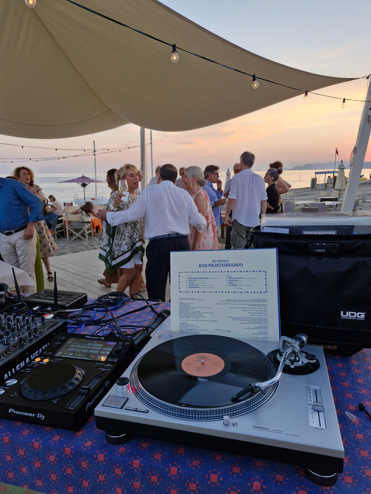
WEDDING
La musica del
vostro giorno.
Ogni matrimonio ha una storia diversa. Per questo non parto da una playlist, ma da voi.
01Ci conosciamo
Parliamo di gusti, generi, canzoni importanti e atmosfera.
02Costruiamo la selezione
Preparo il set pensando alla vostra giornata e ai vostri invitati.
03Suoniamo
aperitivo, cena, dopo cena: la musica cambia insieme alla serata.
Niente animazione forzata.
Niente formule preconfezionate.
Solo musica, atmosfera e una pista da leggere.
EVENTS
La musica cambia.
La cura rimane.
Feste ed eventi su misura, eventi aziendali, inaugurazioni, aperitivi, locali, feste in villa e serate speciali.
01Private parties
02Corporate & brand events
03Club, bars & venues
04Beach & summer events
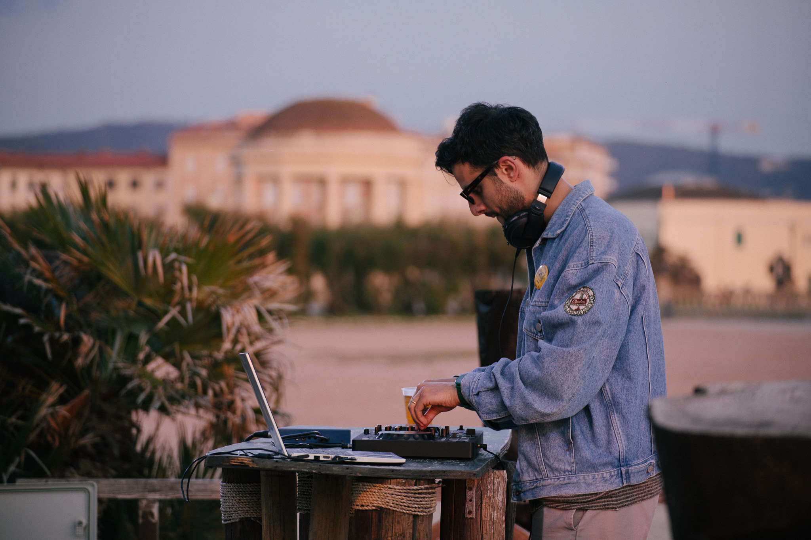
VINYL
Vinyl is
a state of mind.
Il vinile è parte della mia passione per la musica e del mio modo di viverla.
Selezioni in vinile per aperitivi, cocktail, eventi, cene e occasioni speciali: disco, soul, funk, jazz, house, italian classics e tutto ciò che merita di essere ascoltato su un piatto.
La Vinyl Session è un servizio dedicato e viene valutata in base alla location e al tipo di evento.
Parliamo di Vinyl Session →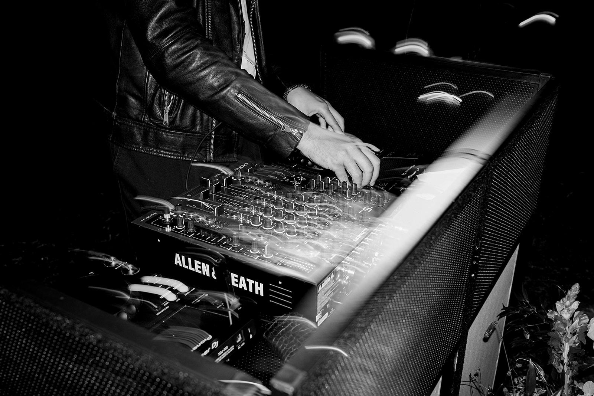
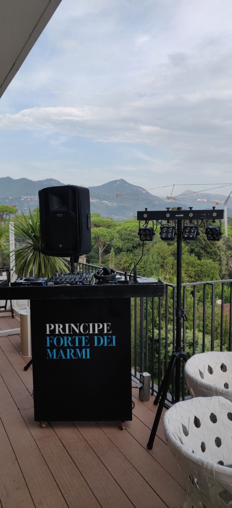
SOUND
Un sistema audio
progettato per essere ascoltato.
RCF ART 715 MK4 · Allen & Heath Xone:92 · Pioneer XDJ-700 · kit luci e microfono, in base alle esigenze della location.
Scopri il servizio tecnico →GALLERY
Some nights,
some memories.
Dal tramonto alla pista.
Un po' di Lorendini in giro.
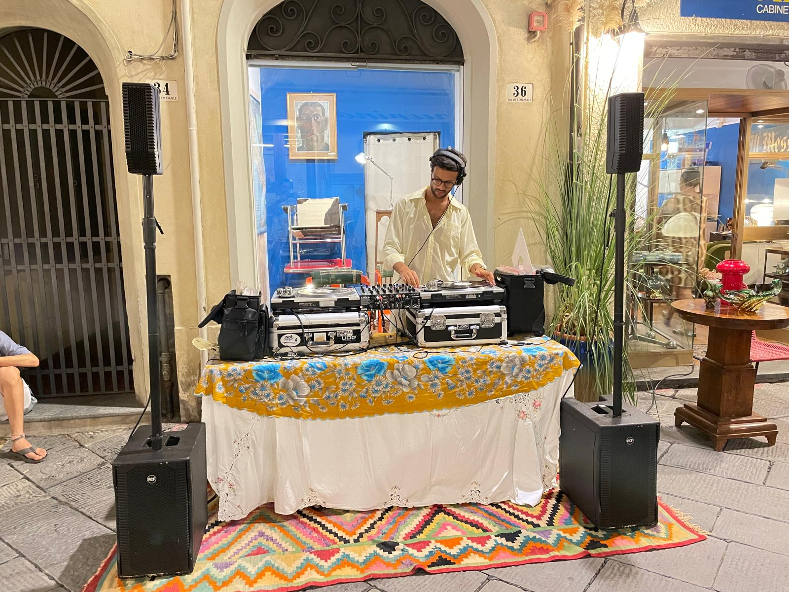
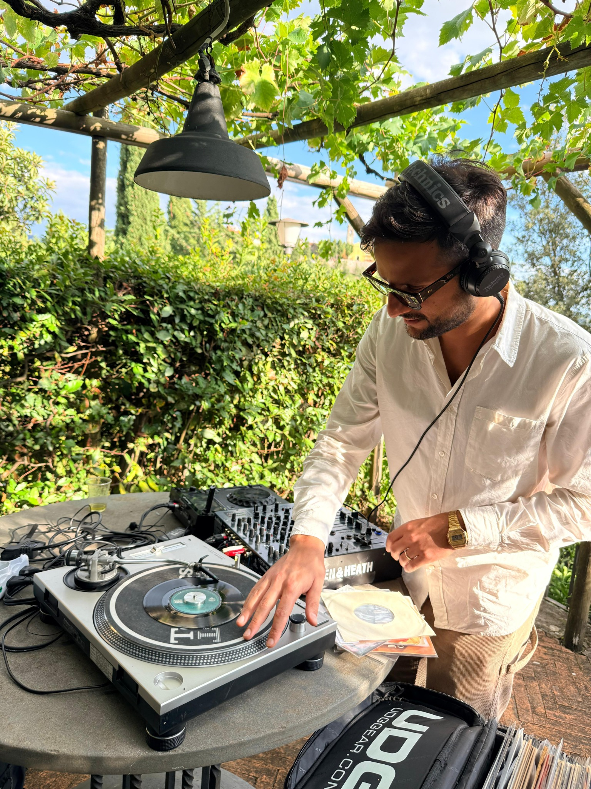
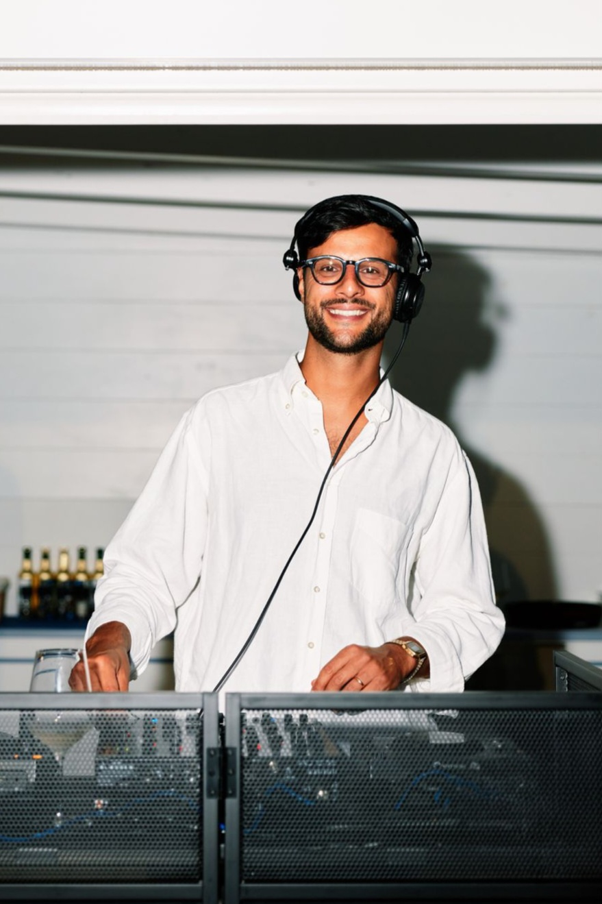
TESTIMONIANZE
Parlano
gli sposi
★★★★★
5,0 / 5
· 100% feedback positivi · 5 recensioni
“Si è dimostrato molto disponibile nell'assecondare i nostri gusti e richieste. Cordiale e amichevole con i nostri invitati, i quali si sono complimentati con noi per la qualità della musica.”
Ciro · Matrimonio.com · 01/10/2024“Il mix perfetto tra professionalità e coinvolgimento. Ha fatto ballare tutti dal primo all'ultimo minuto della festa sapendo come intervenire musicalmente sempre al momento giusto.”
Paolo & Jessica · Matrimonio.com · 16/09/2024“Ha saputo adattarsi al nostro matrimonio francese con una playlist italo-francese e internazionale. È stato molto disponibile alle nostre richieste e abbiamo festeggiato in modo bellissimo.”
Sarah · Matrimonio.com · 24/06/2024“Lorenzo ha suonato per il nostro matrimonio dal pomeriggio fino a tarda notte, bravissimo nello scegliere i pezzi giusti nel mantenere sempre l'atmosfera. Molto professionale, organizzato ed attrezzatissimo.”
Riccardo · Matrimonio.com · 26/09/2023PRONTO A CREARE LA COLONNA SONORA DEL TUO EVENTO?
Raccontami
la tua serata.
Scrivimi due righe: data, location, tipo di evento e quello che hai in mente. Ti rispondo personalmente.